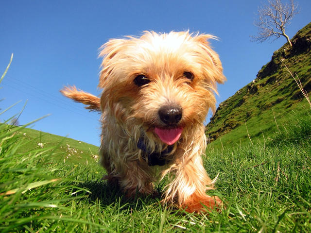

Fostering

Fosterers provide a much-needed temporary home for animals while they receive rehabilitation or are waiting to find a suitable permanent home.
Without our own rehoming kennels and cattery we have to place the animals in our care either in a boarding kennel/cattery or in foster homes. Where it is possible to place an animal in foster we prefer to do so. Not only does this save on kennelling fees but more importantly, it means the animal can be in a home environment which is usually much better for them and has other benefits.
- The animal is able to stay in a home environment which is often less stressful for them than kennels.
- Training and rehabilitation needs can be considered.
- The fosterer gets to know the animal, its likes and dislikes, training needs and personality. This means a better match can be made with potential adopters and adopters can be provided with advice tailored for that animal.
Food, litter and litter trays (for cats), medications and other necessary expenses are covered by the RSPCA. Veterinary treatment is available through the RSPCA clinic in Cambridge, so we do ask that fosterers are able to transport animals to the clinic for routine treatments and check-ups as this is a lot cheaper for us than using private veterinary clinics.
Fostering information from the national RSPCA website.
Email our fostering coordinator for more information: rehoming@rspcacambridge.org.uk.